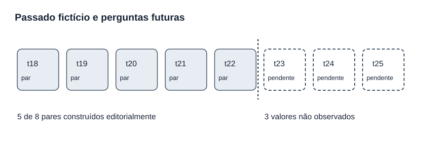
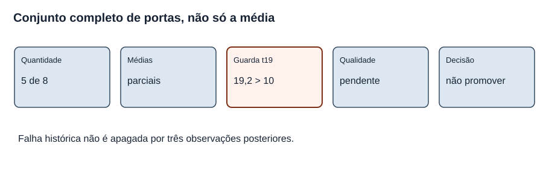
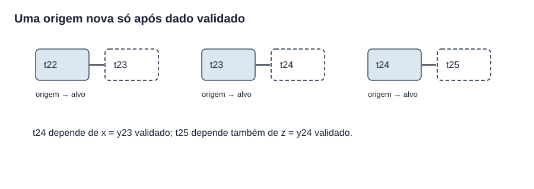
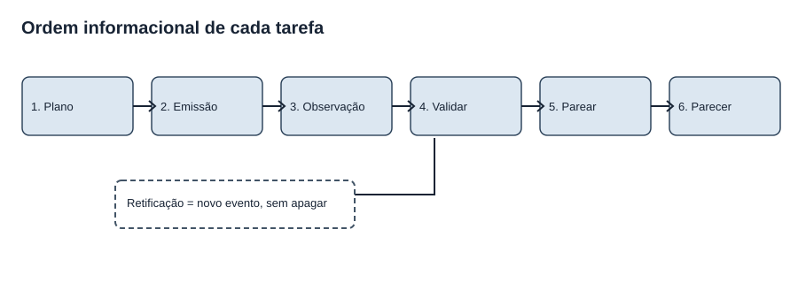
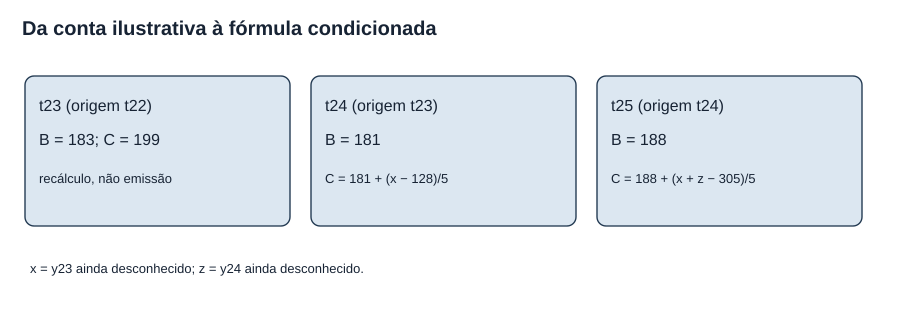
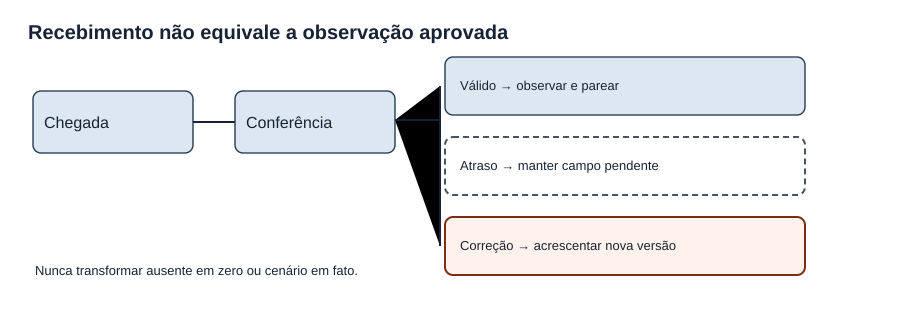

MAT-EST-051 — Desenho de uma avaliação temporal futura: hipóteses, coleta, critérios e análise pós-registro
Área: Matemática. Unidade: Estatística — séries temporais / ponte universitária. Nível: 6. Anterior: MAT-EST-050. Próximo, proposto: MAT-EST-052 — Ensaio operacional de monitoramento: integridade do registro, atrasos de observação e encerramento auditável. Material: texto, dados, gráficos e 36 questões autorais, sem reprodução de questões oficiais. Progresso individual: não iniciado e inalterado.
Estado dos dados: os 22 pontos de t01 a t22 são números inventados e mantidos como narrativa histórica do projeto. Em t23, t24 e t25 ainda não existem valores observados. Os valores 178, 191 e 209 são três cenários alternativos para t23, não observações, não probabilidades e não três novas linhas de uma série. A previsão de t23 calculada retroativamente com dados até t22 é ilustrativa, não registro autenticado de uma emissão real naquele instante. Nenhuma decisão de produção ou ciência empírica decorre destes dados.
Roteiro de estudo: bloco A, 30 a 45 minutos, pergunta avaliativa, evidência e tempo informacional; bloco B, 30 a 50 minutos, protocolo, registro e critérios; bloco C, 30 a 50 minutos, análise condicionada, exercícios, relatório e revisão. Se uma fórmula não for compreendida, recuperar médias, diferenças ou funções lineares antes de passar ao próximo bloco.
1. Objetivos e pré-requisitos
Ao estudar e tentar as atividades, você deverá conseguir: distinguir hipótese, critério, cenário e observação; definir de antemão uma tarefa com origem e horizonte; identificar quando uma previsão passa de cálculo ilustrativo a emissão registrável; preparar um esquema auditável de coleta e versões; derivar as previsões condicionais de t24 e t25 sem acessar alvos futuros; construir métricas emparelhadas com denominador explícito; aplicar portas de decisão sem ignorar falhas históricas; explicar como dados ausentes e retificados entram em registros apend-only; e redigir uma análise pós-registro que separe resultados, ressalvas e autorização humana.
Conhecimentos anteriores: frações, proporções, médias, módulo, números negativos, funções simples, séries sazonais e avaliação de previsões. Na árvore do projeto, recuperar MAT-EST-031, 032, 039, 041, 042 e MAT-EST-043 a 050 quando necessário. A ligação com ENEM e vestibulares é a leitura crítica de gráficos, tabelas, proporcionalidade, formulação de hipóteses e qualidade de argumentos; governança de modelos é o aprofundamento universitário aqui proposto, não uma exigência curricular específica atribuída a qualquer banca.
2. Por que desenhar a avaliação antes de receber a resposta?
É relativamente fácil criar critérios depois de descobrir os resultados: excluir um trimestre ruim, trocar um custo ou considerar um cenário como observado. Isso produz uma história favorável, mas impede distinguir previsão genuína de explicação construída com o alvo já conhecido. Um protocolo pré-especificado indica qual pergunta será respondida, quais observações poderão entrar, quando serão obtidas, como serão comparadas e o que será feito se faltar um dado. Um registro temporal verificável estabelece a ordem entre emissão, observação e correção. Chama-se aqui avaliação prospectiva aquela cuja previsão e cujo protocolo existem antes de se conhecer o respectivo resultado; no presente pacote criamos apenas o desenho didático dessa avaliação.
O livro aberto Forecasting: Principles and Practice, seção 5.10, explica a avaliação por origens temporais sucessivas: cada previsão deve usar apenas observações anteriores ao alvo. A literatura de avaliação de previsões alerta também para vazamento de informação durante pré-processamento, escolha de modelo e comparação. Isso fundamenta o método geral, não valida os valores inventados desta aula. Fontes ao final.

Figura 1 — Tempo da pergunta e da resposta. Texto alternativo: uma faixa de t18 a t22 contém cinco alvos fictícios emparelhados; uma divisória separa t23 a t25 ainda sem observado. Observe: uma coluna futura vazia não é zero e um cenário não pode substituí-la. Conclusão por áudio: o desenho de avaliação precede a chegada dos resultados; não há sexto, sétimo ou oitavo par efetivo neste pacote. Autoria: projeto, diagrama original.
Vocabulário que não deve ser misturado
Hipótese é uma proposição testável: por exemplo, “o desafiante reduzirá o MAE em pelo menos vinte por cento nos oito pares previstos”. Critério de decisão indica a regra operacional para permitir ou impedir uma ação; pode exigir mais do que uma hipótese média. Cenário é um “e se”: se t23 fosse 178, calcularíamos determinados erros. Observação é o valor efetivamente recebido e verificado conforme a fonte e o momento declarados; nosso mundo aqui é inteiramente fictício, mas mesmo a simulação deve respeitar suas etiquetas. Pré-registro é a documentação anterior ao acesso às respostas futuras. Apend-only significa adicionar eventos sem sobrescrever silenciosamente os anteriores: uma correção é outro evento vinculado ao registro original.
3. O que o projeto já possui e o que continua bloqueado
A referência sazonal BASE-SNAIVE-v1, abreviada B, toma o valor quatro períodos antes: (\widehat y^B_{t\mid t-1}=y_{t-4}). Leitura: previsão de B para o próximo período é o observado quatro períodos antes. O desafiante CHAL-SDELTA5-v1, abreviado C, soma a B a média de cinco diferenças sazonais recentes (d_j=y_j-y_{j-4}). A equação é (\widehat y^C_{t\mid t-1}=y_{t-4}+\frac15\sum_{j=t-5}^{t-1}d_j). Leitura: para prever t, C usa a mesma observação sazonal de B e acrescenta a média de cinco diferenças já disponíveis no fechamento do período t menos um. Nenhum parâmetro foi reaprendido aqui; trata-se das regras documentadas na MAT-EST-049.
| Alvo fictício | Origem | Observado fictício | Previsão B | Previsão C | Erro B | Erro C |
|---|---|---|---|---|---|---|
| t18 | t17 | 176 | 151 | 166,2 | +25 | +9,8 |
| t19 | t18 | 183 | 187 | 206,2 | −4 | −23,2 |
| t20 | t19 | 181 | 160 | 177,2 | +21 | +3,8 |
| t21 | t20 | 188 | 167 | 185,2 | +21 | +2,8 |
| t22 | t21 | 193 | 176 | 195,2 | +17 | −2,2 |
O erro assinado é (e=y-\widehat y). Pronuncie: “erro igual a observado menos previsto”. Um sinal positivo indica que faltou previsão; um sinal negativo indica que houve previsão excessiva. A soma dos módulos é 88 para B e 41,8 para C, portanto (MAE_B=88/5=17,6) e (MAE_C=41,8/5=8,36), ambos em unidades fictícias. MAE lê-se “erro absoluto médio”. Sob o custo congelado (C(e)=3\max(e,0)+\max(-e,0)), as médias são 51,2 e 14,92 pontos fictícios.
Mas: em t19, o módulo de C foi 23,2, contra quatro de B: piora local de 19,2 unidades. MAT-EST-049-PROT-v1 exige pelo menos oito pares em dois ciclos sazonais; redução mínima de vinte por cento para MAE e custo médio; nenhuma piora local acima de dez unidades; qualidade auditada; aprovação humana e plano de reversão. A falha de t19 é irrevogável para esse protocolo. Novos dados podem completar o registro para fins pedagógicos ou fundamentar outro protocolo declarado antecipadamente, mas não apagar a falha nem autorizar a promoção na versão antiga. Há cinco pares completos de oito planejados. Preservamos MAT-EST-049-PROT-v1 byte a byte.

Figura 2 — Portas cumulativas. Texto alternativo: há cinco de oito pares; as duas médias atuais são descritivamente menores; a guarda local t19 foi violada; auditoria e decisão humana ainda são ausentes. Observe: a guarda continua fechada mesmo se o total chegar a oito. Conclusão por áudio: atender um agregado não substitui todas as condições de aprovação. Autoria: projeto, diagrama original.
4. Perguntas e registro propostos: o que é fixo e o que é derivado
Pergunta primária congelada herdada: nos alvos t18 a t25, horizonte um, o candidato C pode ser analisado para promoção segundo todas as portas de MAT-EST-049-PROT-v1? A resposta quanto à promoção sob essa versão já é não, pois t19 viola uma porta. Ainda é instrutivo registrar os alvos restantes sem apagar perdas e escrever um encerramento honesto. A segunda pergunta, de aprendizagem operacional, é se o desenho permite reproduzir emissões e avaliações futuras, com origem, data de disponibilidade, versão do modelo, dados conhecidos e retificações.
Hipóteses descritivas a verificar somente quando houver pares válidos: H1, o MAE médio do desafiante será no máximo oitenta por cento do MAE da referência no conjunto completo t18–t25; H2, o custo médio de C, usando o mesmo peso três anterior, será no máximo oitenta por cento do custo médio de B; H3, nenhuma tarefa terá piora de módulo superior a dez unidades; H4, a trilha de dados terá proveniência e conferência suficientes. Escrever cada uma não a torna verdadeira. H3 já foi violada em t19. Não se atribui probabilidade de sucesso nem teste estatístico a uma amostra inventada.
Regra de origem e alvo: t23 deve corresponder à origem t22, t24 à origem t23, t25 à origem t24. O horizonte é sempre um período. Para cada alvo, B e C usam a mesma versão validada da observação disponível naquela origem. O objetivo primário utiliza pares, não o mesmo valor de t23 reciclado como se fossem dois alvos. Um modelo não recebe acesso a dados posteriores por antecipação.

Figura 3 — Três origens móveis. Texto alternativo: origem t22 aponta para alvo t23; t23 aponta para t24 apenas depois de uma observação válida; t24 aponta para t25 sob a mesma condição. Observe: o segundo e terceiro pares dependem da chegada dos dados anteriores. Conclusão por áudio: a regra de um passo só pode avançar quando há observação admitida e emissão preservada. Autoria: projeto, diagrama original.
Contrato de registro prospectivo didático: MAT-EST-051-PLAN-v1
Este é um plano para possível simulação posterior, não uma alteração de MAT-EST-049-PROT-v1 nem um log efetivamente emitido. Uma ficha de emissão precisa, no mínimo: event_id; protocol_id; model_version; origin_period; target_period; horizon; forecast_value; unit; input_data_snapshot_id; input_max_period; issued_at ou índice de sequência autenticado; status; algorithm_version; digest. A ficha de observação traz observation_id, target_period, observed_value ou nulo, source, available_at, quality_status, data_version e eventual referência a correção. A comparação registra os dois event_id compatíveis, a observação aprovada e o método de cálculo. O comunicado final lista também a quantidade de pares previstos, completos, ainda pendentes, excluídos por regra prévia, versões utilizadas e bloqueios.
Sem relógio verificável, não inventar horário. Um número de sequência de simulação pode mostrar a lógica, mas não prova ordem de eventos real. Um resumo criptográfico, como SHA-256, ajuda a verificar bytes preservados; isoladamente não prova que o arquivo existiu antes da observação nem autentica quem o produziu. Um protocolo genuinamente prospectivo exigiria trilha externa de data e controle de acesso. Não existe esse registro para t23 nesta aula.

Figura 4 — Registro com ordem verificável. Texto alternativo: planejamento leva a emissão imutável; depois vem observação, validação de qualidade, emparelhamento e parecer. Uma retificação entra em ramo novo, sem apagar a versão antiga. Observe: a observação não alimenta retroativamente a emissão antiga. Conclusão por áudio: corrigir dados significa adicionar uma versão e recalcular explicitamente as consequências, nunca editar previsões históricas silenciosamente. Autoria: projeto, diagrama original.
Um registro inicialmente incompleto é um resultado de controle legítimo
O plano-emissoes-pendentes-t23-t25.csv apresenta três linhas de planejamento com forecast_status=nao_emitido. Na coluna de observação o estado é nao_observado e o valor permanece vazio. Há um CSV separado, projecoes-ilustrativas-t23.csv, para os cálculos B igual a 183 e C igual a 199, marcados como recalculo_didatico_nao_log_autenticado. Não copiar esses valores para um campo que indique emissão autenticada; isso seria fabricar evidência temporal. O arquivo cenarios-herdados-t23-nao-observados.csv mantém os cenários alternativos em sua própria classe.
5. Como preparar previsão futura sem revelar futuro: exemplo resolvido
No fechamento fictício de t22 temos y19 igual a 183, y20 igual a 181, y21 igual a 188, y22 igual a 193. Para t23, a referência toma y19: B23 = 183. As diferenças sazonais d18 a d22 são, respectivamente, 25, menos quatro, 21, 21 e 17. Somam 80; a média é 16. Assim, C23 = 183 + 16 = 199. Estas são contas condicionadas ao histórico, não provas de emissão em tempo real.
5.1 E se recebermos t23 igual a x, futuramente?
Não atribuímos número a x. Apenas demonstramos qual conta será possível depois de registrar e validar esse observado. Na origem t23, a referência para t24 será y20, igual a 181. Para C24, a janela passa a d19, d20, d21, d22 e d23. Os quatro conhecidos somam menos quatro mais 21 mais 21 mais 17, igual a 55. Como (d_{23}=x-183), a soma vira (x-128). Portanto:
[\widehat y^C_{24\mid23}=181+\frac{x-128}{5}.]
Leitura: “previsão C para o período vinte e quatro, feita na origem vinte e três, é cento e oitenta e um mais x menos cento e vinte e oito dividido por cinco”. O valor x é um possível observado de t23, ainda desconhecido. Não calcular uma previsão numérica para t24 sem x e depois alegar que se trata de uma emissão de horizonte um.
5.2 E se, mais tarde, t24 for registrado como z?
Para t25 a referência toma y21, logo B25 = 188. A janela de C passa a d20, d21, d22, d23 e d24: os três primeiros somam 21 mais 21 mais 17, igual a 59. O quarto é x menos 183 e o quinto é z menos 181. A soma total é (x+z-305). Então:
[\widehat y^C_{25\mid24}=188+\frac{x+z-305}{5}.]
Leitura: “previsão C para vinte e cinco é cento e oitenta e oito mais x mais z menos trezentos e cinco, tudo dividido por cinco”. Para aprender, se hipoteticamente x igual a 191 e z igual a 185, C24 seria 193,6 e C25 seria 202,2. Esses números permanecem em uma ficha de exemplo condicionado, jamais no registro de fatos do estudo. Em especial, o cenário 191 já existia como uma das alternativas t23 na aula anterior, sem probabilidade ou status observado.

Figura 5 — Valores ainda desconhecidos. Texto alternativo: B23 e C23 têm valores ilustrativos 183 e 199, enquanto C24 depende de x, o ainda não observado t23, e C25 depende de x e z, sendo z o ainda não observado t24. Observe: cada variável aparece apenas depois que a origem autorizada a conhece. Conclusão por áudio: fórmula simbólica permite planejar sem preencher indevidamente o futuro. Autoria: projeto, diagrama original.
6. Critérios e denominadores: planejar a conta antes do resultado
Para um conjunto de N pares elegíveis, compare erro absoluto médio, MAE, separadamente, mas no mesmo alvo e horizonte:
[MAE_M=\frac{\sum_{i=1}^{N}|y_i-\widehat y_{M,i}|}{N}.]
Leitura: “erro absoluto médio do modelo M é a soma de N módulos de observado menos previsto, dividida por N”. A unidade é a mesma da série. O custo médio congelado usa (C(e)=3\max(e,0)+\max(-e,0)), em pontos fictícios por previsão. O ganho descritivo relativo em MAE é (G_{MAE}=1-MAE_C/MAE_B), lido “um menos o erro médio de C dividido pelo erro médio de B”, se o denominador for maior que zero. Para o custo, a forma é análoga. Se o denominador for zero, a razão fica indefinida e um protocolo deveria dizer como tratar esse caso, em vez de inventar percentuais.
Há dois limiares de vinte por cento: (MAE_C\leq0,8,MAE_B) e (\overline C_C\leq0,8,\overline C_B). Leitura: a média do desafiante deve ser no máximo oitenta por cento da média da referência em cada métrica. Além disso, para todo alvo elegível, (|e_C|-|e_B|\leq10) unidades; pronuncie “módulo do erro do candidato menos módulo do erro da referência deve ser menor ou igual a dez”. A desigualdade falhou em t19: 23,2 menos quatro igual a 19,2. Isso não pode ser reparado calculando outra média.
| Critério do protocolo herdado | Estado demonstrado até t22 | Situação |
|---|---|---|
| Oito pares t18–t25, mesmo horizonte | Cinco completos, três futuros | Pendente |
| Redução MAE pelo menos 20% | Resultado parcial 52,5% | Descritivo, não final |
| Redução de custo médio pelo menos 20%, peso 3 | Resultado parcial cerca de 70,86% | Descritivo, não final |
| Piora local nunca acima de dez | t19 igual a 19,2 | Falhou |
| Auditoria, autorização humana, rollback | Não realizados | Pendente |
Síntese por áudio: completar mais três linhas não elimina a falha ocorrida em t19; por isso o status de promoção sob este protocolo permanece bloqueado. Os resultados agregados parciais são medidas sobre cinco pares sintéticos, não inferência para oito tarefas nem para demandas reais. O documento de planejamento não modifica os limiares antigos.
Exemplo de contagem com atraso
Suponha que duas previsões novas foram devidamente emitidas e registradas, mas chegou apenas uma observação de qualidade aprovada. A contagem de pares elegíveis sobe em um, não em dois. O outro alvo permanece pendente. Nunca preencher zero, usar o cenário 178 como substituto ou dividir a soma pelo total planejado como se todas as observações existissem. É necessário reportar N_planejado, N_emitido, N_observado_validado, N_pareado e N_pendente. Uma eventual exclusão deve decorrer de regra documentada, com razão e histórico preservados.
7. Falhas de coleta e correções: governança antes do cálculo
O valor observado pode chegar atrasado, duplicado, com unidade errada ou sujeito a retificação. O fluxo recomendado para o projeto simulado é: receber em quarentena; conferir período, tipo, fonte e unidade; registrar observation_id e versão; comparar com os eventos de emissão anteriores; aceitar ou classificar a divergência; calcular métricas apenas em pares válidos; produzir relatório com denominadores. Uma retificação jamais deve apagar a versão inicial. Um evento OBS-CORRECTION aponta para o anterior, relata motivo e mantém os dois valores, o momento em que se tornaram disponíveis e o efeito sobre o parecer.
Imagine, apenas como demonstração, uma futura linha t23 inicialmente registrada como 191 e corrigida para 190 depois. A emissão B23=183 e C23=199 teria de permanecer com o mesmo valor se tiver registro prévio válido; os erros calculados seriam atualizados com rastro de versões. A nova observação não pode ser usada para refazer a previsão original. Neste pacote, porém, 191 e 190 não são observações, nem há evento efetivamente corrigido em t23. Este exemplo serve para ensinar a operação, não para criar dados.

Figura 6 — Qualidade sem preenchimento enganoso. Texto alternativo: dado recebido entra em conferência; se válido, torna-se elegível; se atrasado, permanece pendente; se incorreto, retificação é evento novo e mantém a versão antiga. Observe: não há seta que transforme o campo vazio em zero ou cenário. Conclusão por áudio: métricas só podem usar observações aceitas e previsões comprovadamente anteriores aos alvos. Autoria: projeto, diagrama original.
Uma tabela mínima para publicação e auditoria
| Campo de saída | Conteúdo exigido |
|---|---|
| Pergunta e amostra | Períodos-alvo, horizonte, número previsto e número completo |
| Proveniência | Fonte, data/ordem confiável, versões dos dados e modelos |
| Desempenho | MAE, custo, piora local e respectivos denominadores |
| Irregularidades | Atrasos, ausências, correções, duplicações, janela sazonal |
| Decisão | Portas individualmente, responsável humano e versão da decisão |
| Limitação | Série sintética, seleção do candidato e não generalização |
Dizer apenas “o candidato reduziu o MAE” oculta a falha t19 e a incompletude da amostra. Dizer “não promover” sem registrar as médias também seria um relatório empobrecido. Boa comunicação inclui os dois lados, as condições e as reservas.
8. Como separar análise registrada, exploração e mudança de protocolo
O plano proposto mantém MAT-EST-049-PROT-v1 intacto como base do exercício. Qualquer teste de sensibilidade à retirada de uma linha, ao peso do custo ou a cenários de t23 pode acompanhar o relatório em apêndice rotulado exploratório. Uma alteração de regra para um novo ciclo deve ser escrita como novo ID antes de ver os resultados daquele ciclo e não ser apresentada como cumprimento do protocolo antigo. O modelo em sombra pode permanecer disponível para estudo, sujeito a qualidade e responsabilidade, sem ser promovido. O momento de emissão e o momento de avaliação são duas etapas separadas; o envio dos valores hipotéticos 178, 191 ou 209 a uma planilha de observados destruiria essa separação.
Em um sistema de aprendizagem, o mesmo cuidado se aplica à avaliação do aluno: produzir aula não é realizar tentativa. Este pacote não registra estudo, pontuação, revisão feita ou consolidação. A revisão poderá ser programada em um, sete e trinta dias depois de tentativa efetiva, não depois da geração do material.
9. Exemplo completo de relatório de pré-registro, sem inventar resultado
Pergunta: o ciclo de oito tarefas sazonais de horizonte um compara B e C nos mesmos alvos t18 a t25, segundo a regra congelada MAT-EST-049-PROT-v1. T18 a t22 são pares editoriais sintéticos já existentes; t23 a t25 continuam sem observado e sem log autenticado de emissão futura.
Procedimento: preservar o arquivo do protocolo, regras de B e C, janela de cinco diferenças e a métrica assinalada. Ao fechar uma origem, validar as entradas, calcular as duas previsões e registrar eventos imutáveis antes de admitir o alvo. Receber cada resultado com proveniência, permitir retificação como nova versão, parear somente eventos elegíveis e calcular MAE, custos e perdas locais. Separar dúvidas exploratórias do teste congelado.
Estado: há cinco pares no roteiro sintético, MAE B=17,6 e C=8,36, custo médio B=51,2 e C=14,92; em t19 a piora do erro absoluto de C foi 19,2, ultrapassando dez. A regra herdada já impede promoção. O objetivo de preencher eventual avaliação restante é documentar, ensinar e auditar, não apagar esse resultado.
Limitações e próximos controles: os dados são criados para aprender e não há uma avaliação temporal prospectiva real; não se conhecem observações futuras nem probabilidades de seus cenários. A condição de confiabilidade da coleta e a autorização humana não foram satisfeitas. Antes de qualquer uso externo, seriam necessários fontes autênticas, protocolo efetivamente datado, proteção contra vazamento, monitoramento adequado e validação específica no contexto de aplicação.
10. Erros recorrentes e ligações conceituais
Erros frequentes: registrar cenário como observado; afirmar que uma conta feita hoje foi uma previsão autenticada ontem; confundir três cenários do mesmo alvo com três pares independentes; misturar horizontes; alterar o peso três após ver o resultado e atribuí-lo ao protocolo anterior; reemitir previsão depois de conhecer a resposta; apagar uma falha individual por causa de médias favoráveis; usar como denominador oito quando só cinco pares existem; tratar ausência como zero; confundir hash com carimbo temporal; perder a versão corrigida de um dado; declarar validação externa para série criada editorialmente.
Relações com outras matérias: funções e álgebra permitem manter x e z simbólicos, sem fingir observações; em Língua Portuguesa e Redação, hipóteses e limitações precisam ser escritas de forma verificável; em Ciências, pré-registro ajuda a separar teste de exploração; em tecnologia, esquema de eventos, controle de versões e hashes apoiam reprodutibilidade; em Educação Matemática, uma explicação narrada deve dizer como a figura comunica a separação entre passado e futuro. Em contextos públicos ou de saúde, o exercício não autoriza previsão real de atendimento nem regra operacional para pessoas.
11. Vídeo complementar e leitura verificada
Vídeo: Forecasting: Principles & Practice — 5.10 Time series cross-validation, canal OTexts, em inglês, publicado em 5 de março de 2023 conforme resultado indexado do YouTube. Duração: não confirmada; não reproduzimos integralmente o vídeo e o carregamento direto do YouTube não foi concluído neste ambiente. Seu título e a vinculação com a coleção do livro estão disponíveis. Assistir depois da seção 4, para reforçar a regra de que cada origem usa apenas informações anteriores ao alvo. A aula permanece completa sem o vídeo. Conferir a reprodução direta e legendas antes da publicação no site.
Leituras: Hyndman e Athanasopoulos, Forecasting: Principles and Practice, 3ª ed., seção 5.10: Time series cross-validation e seção 5.8: Evaluating forecast accuracy; artigo científico sobre erros comuns em avaliação de previsões, publicado em 2022, edição 2023. A fundamentação bibliográfica refere-se a método, não a um resultado factual da série inventada.
12. Atividades graduais e correção
Os enunciados completos estão em exercicios.md e exercicios.json: dez de aprendizagem básica, dez de consolidação, dez autorais em estilo vestibular e seis de reteste em outra sessão, totalizando 36 questões autorais. A resolução individual, com justificativa, conferência das contas e categoria provável de erro, está separada em gabarito-comentado.md e gabarito-comentado.json. Não exibir automaticamente a resposta antes da tentativa; nenhuma dessas questões é oficial de ENEM, FUVEST, UNICAMP ou UNESP.
Orientação de resolução: em toda questão pergunte primeiro qual é a origem informacional, qual é o alvo, qual o status do número (registrado, hipotético ou pendente), que operação é necessária e que afirmação os dados autorizam. Refaça contas sem gabarito antes de classificar o erro em conteúdo, interpretação, cálculo, distração, memória, estratégia ou tempo.
13. Resumo pronunciável para ouvir
Uma previsão só pode ser avaliada de modo prospectivo quando a sua origem, versão e valor já estavam registrados antes de conhecer a resposta. Até t22 há cinco pares criados editorialmente, enquanto t23 a t25 ainda não possuem valores observados. Os cálculos B23 igual a cento e oitenta e três e C23 igual a cento e noventa e nove são reconstruções didáticas com dados até t22, não prova de emissão em campo. Para prever t24 em horizonte um, dependemos de um x que represente o futuro observado de t23, devidamente validado; para t25, dependemos também de z, futuro observado de t24. A amostra tem cinco pares, não oito. O erro pior do desafiante em t19 foi dezenove vírgula dois unidades acima do erro da referência, infringindo a guarda de dez unidades; nenhuma média posterior apaga essa falha histórica no protocolo antigo. Planejar não é observar, registrar não é avaliar, corrigir não é sobrescrever, e concluir exige mostrar tanto a conta quanto os limites.
Revisão espaçada após tentativa real: no primeiro retorno, reproduza uma origem, um alvo e a distinção cenário versus observado. Após sete dias, derive novamente C24 em função de x e monte a tabela de critérios com denominadores. Após trinta dias, resolva o reteste sem consultar o gabarito e escreva um pré-registro de um parágrafo e um parecer de resultados de dois parágrafos. Se um cálculo travar, retome sua operação elementar e reteste; não alterar progresso individual por leitura ou por geração editorial.
Próximo passo editorial proposto: MAT-EST-052 — Ensaio operacional de monitoramento: integridade do registro, atrasos de observação e encerramento auditável. Não criar observações para t23 a t25 automaticamente e não declarar execução de uma avaliação prospectiva real.
Limites desta entrega: arquivos locais, sem sincronização com Google Drive ou GitHub, publicação ou teste real do Edge, e sem verificação de reprodução integral do vídeo. Nenhuma tentativa de estudante foi fornecida nesta geração.